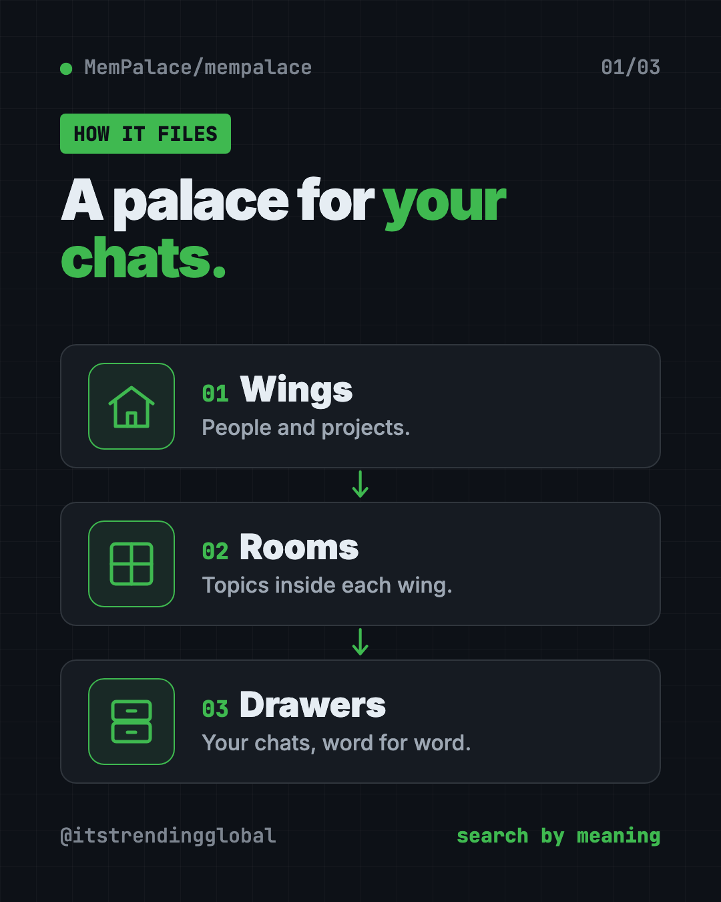
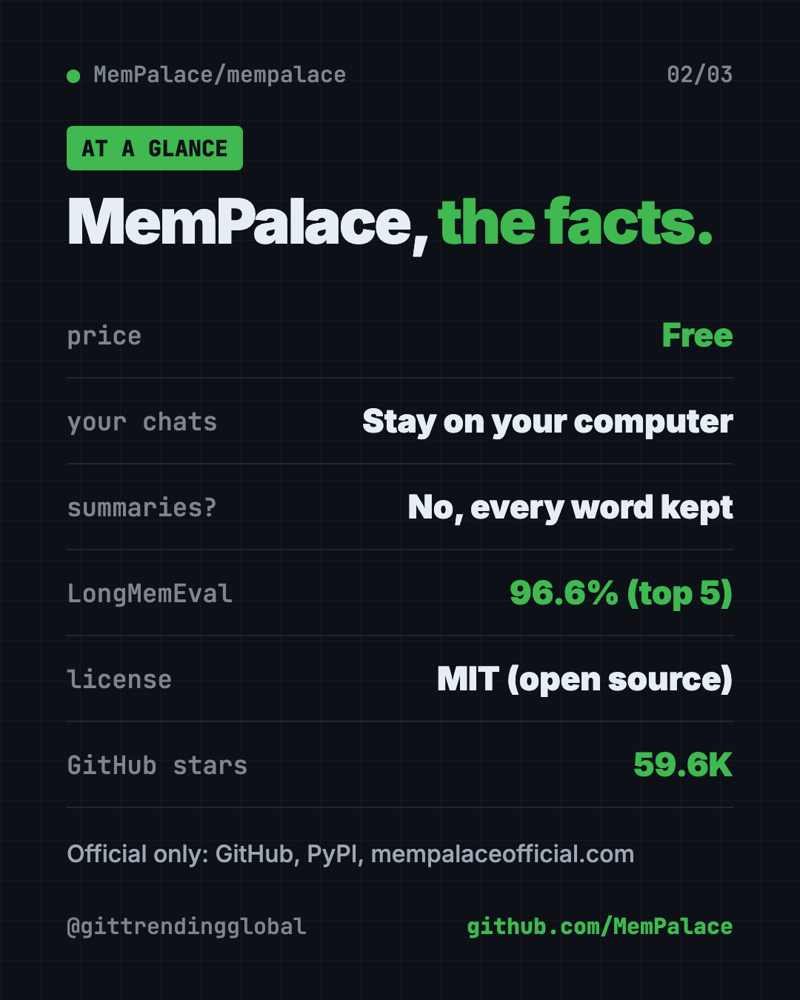
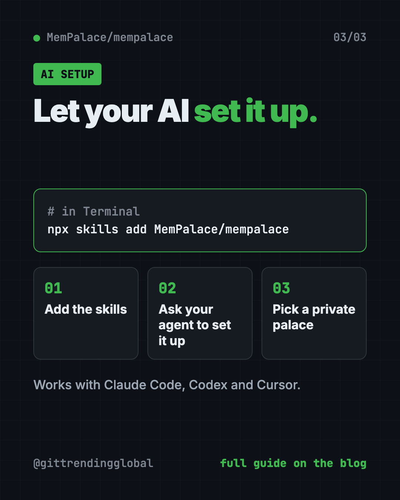

MemPalace: Free AI Memory for Claude Code, Stored Locally
- Published 15 Oct 2026
- Updated 16 Oct 2026
- 7 min read
- License MIT
- By the ITG Now team
MemPalace is free, open-source AI memory for Claude Code, Codex, Cursor and other AI tools. It saves your past chats word for word on your own computer, then finds the right piece when you need it.
So the next time you open a fresh chat, your AI doesn't start from zero. This guide covers what it does, how to set it up, and how to let your AI assistant do the setup for you.
Key takeaways
- Free and open source. MIT license, no paid plan needed.
- Keeps every word. It doesn't summarize your chats, so small details don't get lost.
- Private by default. The README says nothing leaves your computer unless you opt in.
- Strong memory test score. 96.6% on a test called LongMemEval, with no AI model or internet needed for that result.
- Watch for fake sites. The only official sources are GitHub, PyPI and mempalaceofficial.com.
What is MemPalace?
MemPalace is a memory system for AI helpers. It stores your conversation history as exact text. It doesn't shorten, rewrite or "pull out the key points."
To find things later, it uses semantic search. That means searching by meaning, not just exact words. Ask "why did we switch to GraphQL" and it can find the chat where you talked about it, even if you used other words back then.
The name comes from how it files things, like rooms in a building:
- Wings are people and projects.
- Rooms are topics.
- Drawers hold the original text.
This lets a search stay inside one project instead of digging through everything you ever said.

Why do AI helpers forget?
Every new chat with an AI starts blank. You spend an hour making decisions with it. The next day, it knows none of that. So you explain it all again.
Some memory tools fix this by saving short summaries. But a summary throws away details. Often the one detail you need later is the one that got cut.
MemPalace keeps the whole text instead. Then it searches that text when your AI needs background. That makes it simple AI memory for Claude Code and other helpers.
How to use MemPalace (real examples)
- Pick up where you left off. Start a new session and run
mempalace wake-up. Your AI gets the background it needs without you retyping it. - Find an old decision. Search "why did we pick this payment provider" and get the exact chat where you decided.
- Save your project files too. The
minecommand can pull in a project folder, not just chats. - Never lose a Claude Code session. Auto-save hooks for Claude Code, Codex CLI and Cursor save your work on a schedule and before the AI trims its memory.
- Share a memory with your team. During setup you can choose a private palace, a shared "hub," or a connection to a hub someone else runs.
⚠️ Heads up: The README warns that Claude Code sessions expire after 30 days unless auto-save hooks are set up. If you use Claude Code a lot, follow its retention checklist first.
Is MemPalace free and private?
Yes on both. MemPalace is free under the MIT license. You can use it, change it and even use it at work.
The core path needs no API key and no cloud. The README says nothing leaves your machine unless you opt in. Update checks are off by default. When turned on, they only contact PyPI (the main Python app store) and never install anything on their own.
You can choose to send some work to a server, like computing search data on another machine. That is optional.
How good is MemPalace's memory?
The README shares test scores you can rerun yourself from the repo. The headline one is LongMemEval, a set of 500 questions about past chats.
- 96.6% of the time, the right answer was in the top 5 results. This used plain search, no AI model, no internet.
- 98.4% with its "hybrid" search on 450 questions it hadn't been tuned on.
The makers say they skip the "100%" headline on purpose, because the last bit came from studying specific wrong answers. They also choose not to compare against rival tools, since each one measures things differently. We like that honesty.
MemPalace at a glance
| Price | Free |
| Works offline | Yes, after a one-time search model download |
| Platforms | Mac, Windows, Linux (Docker image too) |
| License | MIT (open source) |
| Needs | Python 3.9 or newer, about 300 MB for the search model |
| Works with | Claude Code, Codex CLI, Cursor, Gemini CLI and other MCP tools |
| Best for | People who work on long projects with AI and hate repeating themselves |

How to install MemPalace
You need Python 3.9 or newer and about 300 MB of free space for the search model. The README gives two main paths.
Option 1: Let your AI agent do it (easiest)
First, add the MemPalace skills. A skill is a set of saved instructions your AI can follow. Open Terminal and copy and paste this:
npx skills add MemPalace/mempalace
Then open your AI coding helper and ask it to set up MemPalace. The setup skill checks your computer, installs the app, connects it to your AI and asks which kind of palace you want.
💡 Tip: Pick "private local palace" if you just want memory on your own computer. You can change your mind later.
Option 2: Install it yourself
The README recommends a free tool called uv. Copy and paste this:
uv tool install mempalace
mempalace init ~/projects/myapp
Change ~/projects/myapp to your own project folder. Then save your chats and search them:
mempalace mine ~/.claude/projects/ --mode convos
mempalace search "why did we switch to GraphQL"
mempalace wake-up
The first line pulls in your Claude Code chats. The second searches them. The third loads background for a new session.
There's also a Docker image if you'd rather not install Python. Android phones aren't directly supported, though the README links a workaround guide.
Let Claude or Codex set it up for you
Claude Code and OpenAI Codex are AI helpers that run in your Terminal. They can do setup steps for you while you approve each one.
Copy and paste this:
Please set up MemPalace from github.com/MemPalace/mempalace for me.
1. Read the README first. Only use the official GitHub, PyPI or mempalaceofficial.com sources.
2. Check that I have Python 3.9 or newer.
3. Install it the way the README recommends and set up a private local palace.
4. Turn on the auto-save hooks for the AI tool I'm using.
5. Tell me what each command does before you run it.
Then try asking:
Search my MemPalace for the last time we talked about pricing.
Back up my old Claude Code chats into MemPalace so they don't expire.
Run mempalace audit and explain the results in plain English.

Our take
MemPalace fixes one of the most annoying parts of working with AI: the blank slate every morning. Keeping every word, on your own computer, is a smart and simple idea.
What we like:
- Free, open and private by default.
- No lost details, since nothing is summarized.
- Your AI agent can install it for you.
- Honest test scores you can rerun yourself.
- Auto-save hooks for the most popular AI coding tools.
What to watch for:
- It's still aimed at people who are comfortable with a terminal.
- The search model is a one-time download of up to about 300 MB.
- Fake copycat sites exist. Only use the official links.
- Lots of options (backends, hubs, Docker) can feel like a lot at first.
Want more ways to help your AI remember? Read our guide to Hindsight, another AI memory tool. If you want your AI to understand a whole codebase, try Graphify or CodeGraph.
FAQ
Does MemPalace work with Claude Code?
Yes. It works as AI memory for Claude Code through MCP, a standard way for AI apps to plug into other tools. It also has auto-save hooks for Claude Code, Codex CLI and Cursor.
Is MemPalace free?
Yes. MemPalace is free and open source under the MIT license. No paid service is needed.
Does MemPalace send my chats to the cloud?
No, not by default. The README says nothing leaves your computer unless you opt in.
What is the official MemPalace website?
The README lists only three official sources: the GitHub repo, the PyPI package and mempalaceofficial.com. It warns that other domains may spread malware.
How much space does MemPalace need?
Plan for about 300 MB for the search model. A smaller English-only model is about 30 MB.
Get MemPalace: github.com/MemPalace/mempalace
Keep reading

VoiceStudio: Free ElevenLabs Alternative
VoiceStudio is a free ElevenLabs alternative. Clone a voice, dub videos and turn text into speech on your own Mac, Windows or Linux computer.

Folia: Free Animated Lyrics Music Player
Folia is a free animated lyrics music player that shows full-screen moving lyrics for your local music, Navidrome and more. What it does and how to start.

net-merge: Combine Wi-Fi and Phone Internet, Free
net-merge is a free app to use two internet connections at once, like Wi-Fi plus a phone hotspot, on Windows, Mac and Linux. No account or VPN.